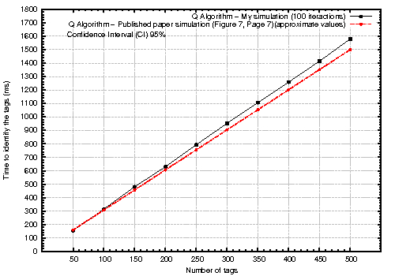

| INTRODUCTION | VALIDATION | FEATURES | INSTALATION | DOWNLOADS | DOCUMENTATION |
Visitors count:
RFID module for ns-2 simulatorRafael Perazzo Barbosa Mota perazzo at ime,usp,br Last
update: 07/02/2013 |
| INTRODUCTION | VALIDATION | FEATURES | INSTALATION | DOWNLOADS | DOCUMENTATION |
The RFID for NS-2 module was developed by Rafael Perazzo Barbosa Mota, member of the Computer Networks research group, Institute of Mathematics and Statistics (IME), São Paulo University (USP), Brazil. This program is a free result: you can redistribute it and/or modify it under the terms of the GNU Public License Version 1 or (at your option) any later version.
I invite users and developers to contact me to report any bug founded in our provided version and give us some suggestions.
Ns is a discrete event simulator targeted at networking research. Ns provides substantial support for simulation of TCP, routing, and multicast protocols over wired and wireless (local and satellite) networks [Text from ns-2 official page]. This project implements a RFID module based on the EPCTM Radio-Frequency Identity Protocols Class-1 Generation-2 UHF RFID Protocol for Communications at 860 MHz ? 960 MHz Version 1.2.0 (25/10/2008) standard for the ns-2 simulator, release 2.35. The focus of this implementation is the Network layer and its mechanisms for anti-collision protocol.
The module was validated through a
comparison with simulation results presented in paper:
Namboodiri, Vinod, et al. "An extensive study of slotted Aloha-based RFID anti-collision protocols." Computer Communications (2012).

The features available for this implementation include:
To install the module, follow the instructions below:
| Description | Link | Usage |
| RFID ns-2 module | Download source code version 0.71 (31/01/2013) | --- |
| tcl example | rfid.tcl | $ ns rfid.tcl |
| awk script to calcule number of identified tags and elapsed time | nodes.awk | $ awk -f nodes.awk rfid.tr Output: Number of identified tags: x during y seconds |
Read on-line:
| INTRODUCTION | VALIDATION | FEATURES | INSTALATION | DOWNLOADS | DOCUMENTATION |
| I would like to
acknowledge Prof. Daniel Macêdo Batista,
USP, IME. Developed by Rafael Perazzo Barbosa Mota (perazzo at ime,usp,br) |